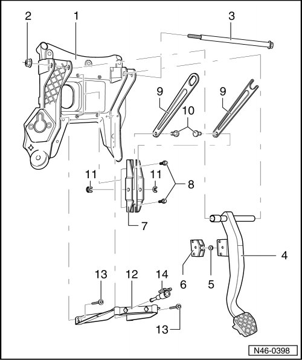

Brake Pedal Assembly Overview
Brake Pedal Assembly Overview
CAUTION!
The path of the brake pedal must not be shortened via extra floor mats.
• Lubricate all bearings and contact surfaces with grease (G 000 450 02).

1 Mounting bracket for pedal assembly
2 Self-locking nut, 20 Nm
3 Pivot pin
4 Brake pedal
5 Ball socket
6 Mount
• For ball head of brake servo push rod.
7 Support
8 Bolt, 8 Nm
9 Crash bar
10 Pin
11 Locking washer
12 Bracket
13 Bolt, 8 Nm
14 Brake light switch (F) and brake pedal switch (F47).
• Removing and installing, refer to --> [ Brake Light Switch and Brake Pedal Switch ] Service and Repair.
• Vehicle from 11.06 do not have a brake light switch.